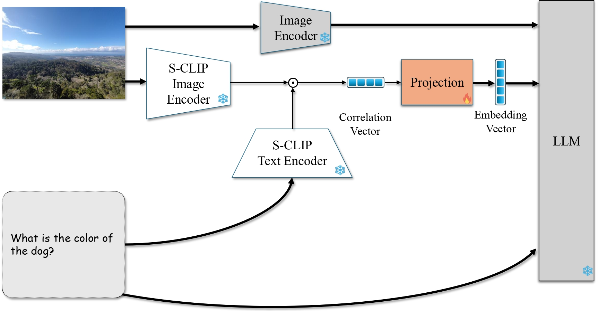

How does CLIP-UP work?
Idea
The core idea of CLIP-UP is to enhance VLMs' abstention ability by injecting an answerability prior into the VLM's decision process. CLIP-UP does so by leveraging correlation vectors derived from CLIP embeddings of the input image and question, encoding image-question alignment information. These vectors are projected into the VLM's intermediate feature space, producing a new embedding vector that serves as an answerability prior and is seamlessly integrated into the model.
Architecture
The figure below illustrates CLIP-UP applied to multiple-choice questions: given an image and a VQA prompt, the prompt is transformed into text segments merging the question with each answer option. These segments and the image are encoded by CLIP (specifically by Structure-CLIP) to produce embeddings, from which correlation vectors are formed via element-wise multiplication. A learnable projection module maps these vectors into the VLM's intermediate feature space. The resulting new embedding vector is integrated into the LLM component of the VLM alongside the standard inputs. The process does not alter the VLM's original weights.

The figure below shows the process for open-ended questions: the flow is similar but involves a single correlation vector computed from the image and question.

Injecting correlation vectors into LoRA
We propose an additional injection approach, beyond generating an embedding vector fed into the VLM. In particular, we propose Injected LoRA, a novel approach for injecting priors into LoRA layers, where the prior in our case is the correlation vectors. We show that this way of using CLIP-UP correlation vectors improves results over standard LoRA. Please see the paper for more details.